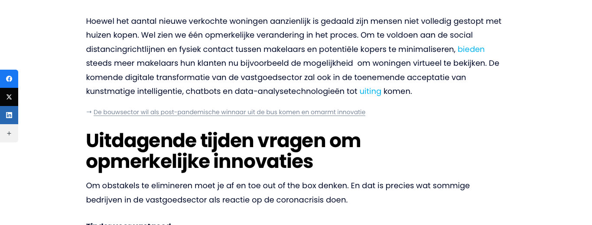
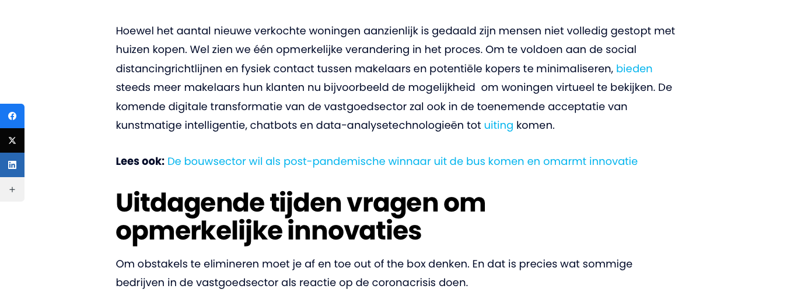

Interne links onopvallend (optie B)
Voorbeeld op een echt artikel ("Hoe innovatie de toekomst van de vastgoedsector verandert"). Nieuw: kleine grijze regel met een pijltje, zonder "Lees ook". De link blijft voor Google even waardevol. Na je akkoord pas ik alle 424 regels in 317 artikelen zo aan.
Nieuw (optie B)

Nu
